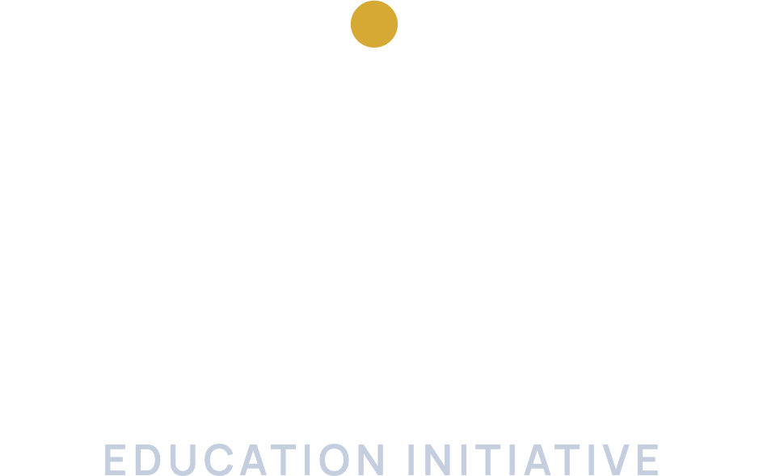
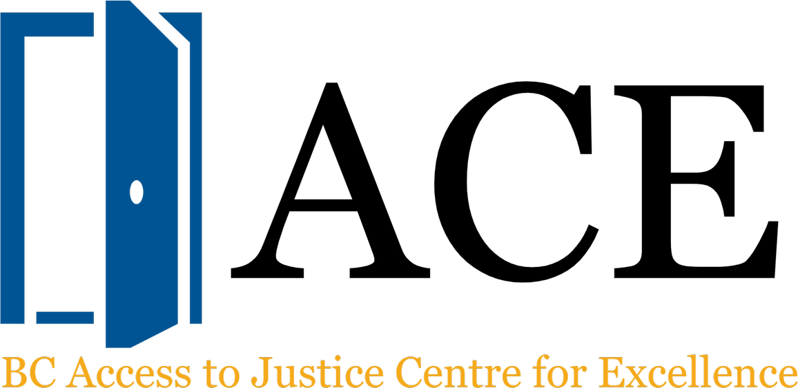

Research
We identified access-to-justice competencies and mapped how all 24 Canadian law faculties teach access to justice, highlighting both strengths and opportunities.
Read the report
About the Initiative
Every year, many people in Canada face legal problems they cannot resolve. Legal professionals can help close that gap — but only if their education gives them the tools to build a people-centred, A2J-focused practice.
Launched in 2025, the Access to Justice Education Initiative (A2JEI) is a national project led by the BC Access to Justice Centre for Excellence at the University of Victoria and McGill University’s Faculty of Law, with generous funding from the CBA Law for the Future Fund.
Project team
We identified access-to-justice competencies and mapped how all 24 Canadian law faculties teach access to justice, highlighting both strengths and opportunities.
Read the reportTo help fill those gaps, we built a free, online introduction to access to justice, designed for law students and practitioners, and open to everyone.
Explore the courseResearch report · September 2026
Access-to-Justice Competencies and Educational Pathways in Canada
What does it take to practise law with people at the centre? This report identifies the access-to-justice competencies Canadian lawyers need — from plain-language communication and trauma-informed practice to Indigenous and Reconciliation competencies — and maps where law students can develop them today.
Every Canadian law faculty teaches access to justice in some form. But most of that teaching remains doctrinal, and only a handful of courses focus on people-centred skills such as building client relationships, communicating accessibly, or using technology responsibly.
Our report identifies potential avenues for enhancing access-to-justice education in Canada.
Valerie L. Le Blanc, Jérémy Boulanger-Bonnelly, Robert Lapper, KC & Michelle Lawrence, Building the A2J Lawyer: Access-to-Justice Competencies and Educational Pathways in Canada (September 2026).
Free online course
You’ve heard of the access-to-justice crisis, but you’ve never learned its causes, its consequences, and what you can do about it? Introduction to Access to Justice is a free, self-paced course built for Canadian law students and practitioners, and open to anyone who is curious about this topic.
Why access to justice matters, what the course covers, and the threads that run through it.
The “waves” of A2J, people-centred justice, and diverse conceptions of justice, including Indigenous legal traditions.
How we measure unmet legal needs, what the Canadian data show, and who is most affected.
How a grievance becomes — or never becomes — a legal claim, and why so many people “lump it.”
The ripple effects on health, finances, families, communities and public institutions.
More modules — on legal aid, regulatory innovation, technology, self-represented litigants and prevention — are on the way.
accesstojustice.moodlecloud.com
Partners

Co-lead · University of Victoria
An applied research institute at UVic’s Faculty of Law working on practical solutions to improve access to justice. BC ACE launched the Initiative and co-leads its research.
bcace.orgCo-lead · McGill University
Led by Prof. Jérémy Boulanger-Bonnelly at McGill University’s Faculty of Law, the Omnijustice Lab co-leads the Initiative’s research and developed its free online course.
McGill Faculty of LawFunder
The Canadian Bar Association’s charitable fund supports research and education projects that shape the future of law in Canada. It generously funds the Initiative.
cba.org